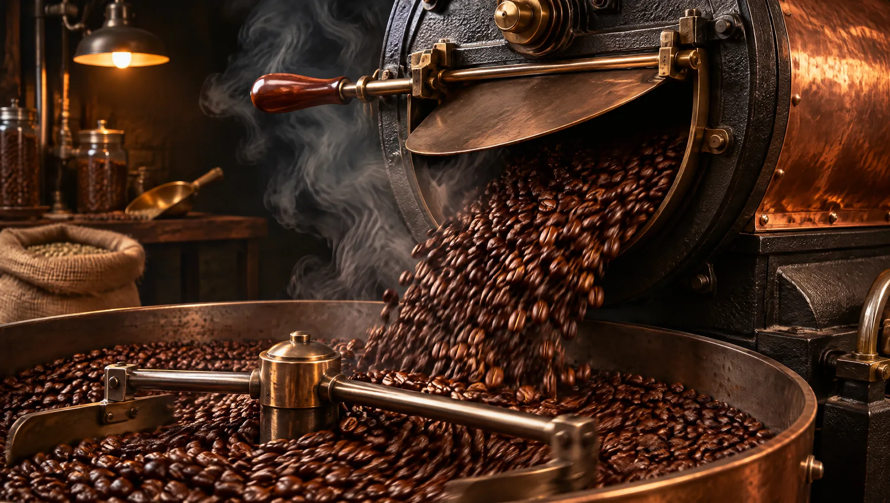
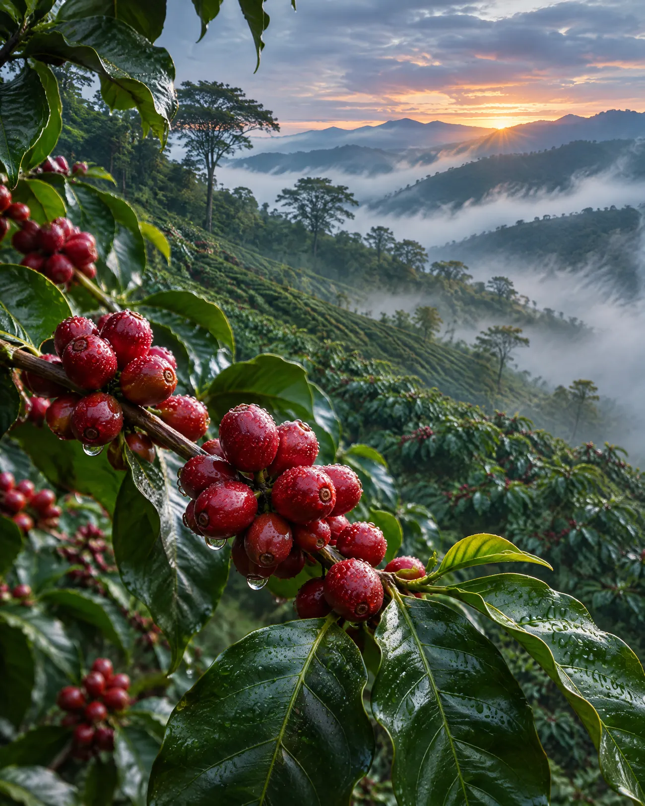
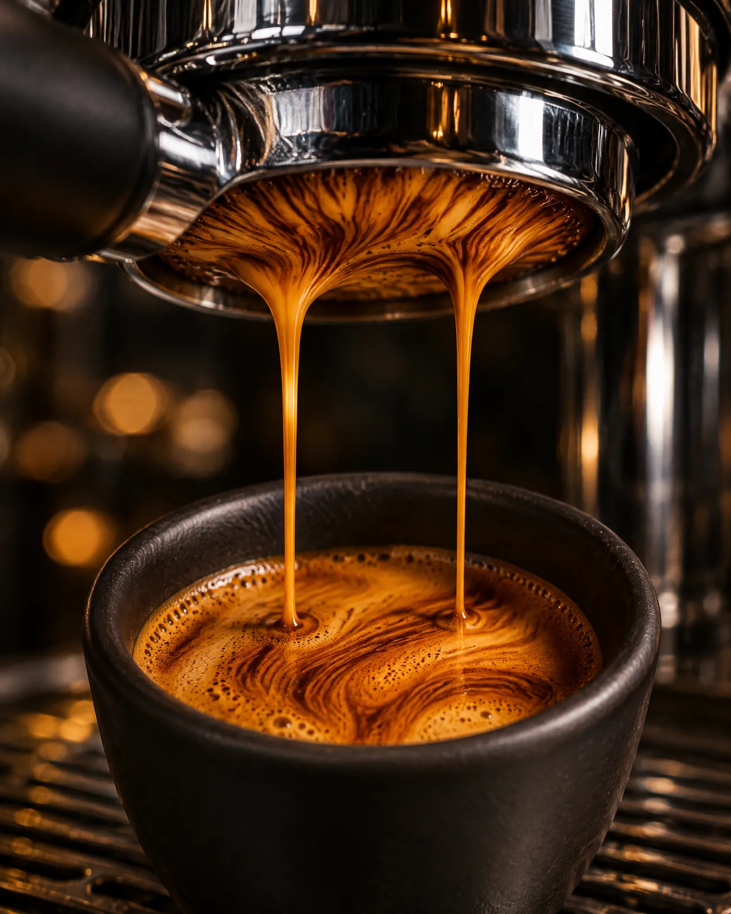

01
Le café vert
Les sacs arrivent par lots de trente kilos. Chaque lot est trié, pesé, et son taux d'humidité mesuré avant le premier essai.
Torréfacteur · Comptoir de dégustation · Nantes
Des cafés de spécialité torréfiés par petits lots, à quelques mètres du comptoir où nous les servons.
01 — L'origine
Nos cafés viennent de fermes que nous connaissons par leur nom : les hauts plateaux de Guji, en Éthiopie, les pentes du Huila, en Colombie. Là-haut le fruit mûrit lentement, et se récolte en plusieurs passages.
02 — La torréfaction
Chaque lot tourne une douzaine de minutes dans un tambour en fonte. Une courbe lente, suivie à l'oreille autant qu'à la sonde : on coupe la chauffe quelques instants après le premier crac.
03 — L'extraction
Dix-huit grammes de mouture, trente-six en tasse. La crema se referme, tigrée, couleur noisette : c'est elle qui dit si le geste était juste.
Les cafés du moment
Paquets de 250 g, en grains ou moulus à la demande. La date de torréfaction est écrite à la main sur chaque sachet.
Éthiopie · lavé · 2 050 mJasmin, bergamote, pêche blanche. Pour le filtre, ou un espresso très vif.
Éthiopie · nature · 1 980 mMyrtille, cacao, fruits rouges confits. Séché trois semaines sur lits africains.
Colombie · lavé · 1 750 mCaramel, pomme rouge, noisette. Le café de tous les matins.
Colombie · honey · 2 100 mSucre de canne, mandarine, fleur d'oranger. Une tasse ronde et longue.
Éthiopie et Colombie · espresso maisonChocolat noir, noisette grillée, fruits secs. Celui que nous servons au comptoir.
Colombie · décaféiné à la canne à sucreBiscuit, miel, cacao doux. Un vrai café, pour le soir.

L'atelier de torréfaction
L'atelier est derrière la vitre du comptoir. On y torréfie le matin, on y goûte l'après-midi, et rien n'en sort sans être passé par la table de dégustation.
01
Les sacs arrivent par lots de trente kilos. Chaque lot est trié, pesé, et son taux d'humidité mesuré avant le premier essai.
02
Trois torréfactions d'essai de 200 g, goûtées à l'aveugle. La courbe retenue est notée, puis reproduite à la seconde près.
03
Le grain dégaze dix jours avant d'être servi en espresso. Vos paquets partent plus tôt : ils finissent de reposer chez vous.
04
Chaque lot est goûté le lendemain. S'il n'est pas au niveau, il ne part pas : il finit en café du personnel.

L'origine
Le café est le noyau d'une cerise. Cueillie mûre, à la main, elle donne une tasse sucrée et nette ; cueillie trop tôt, aucune torréfaction ne la rattrape. C'est pourquoi nous payons la récolte au-dessus du cours, à des producteurs qui repassent quatre ou cinq fois sur le même arbre.
Le nom de la ferme, l'altitude et le prix payé au producteur figurent sur chaque paquet.

Le comptoir
Huit places, une machine à leviers, trois cafés ouverts chaque jour. Demandez le même grain en espresso puis en filtre : c'est la façon la plus simple de comprendre ce que vous aimez.
Le samedi matin, dégustation commentée de quatre cafés. Douze personnes, une heure, 18 €.
Horaires et adresse« On croit venir chercher un paquet de café. On repart en sachant enfin pourquoi on l'aime. »
L'abonnement
Nous choisissons, vous goûtez. Torréfié le lundi, posté le mardi, dans votre boîte aux lettres le jeudi. Sans engagement : une pause ou un arrêt se règle en un message.